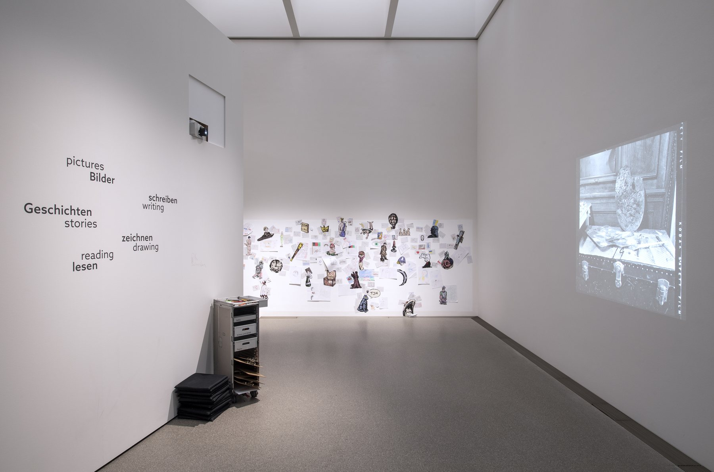
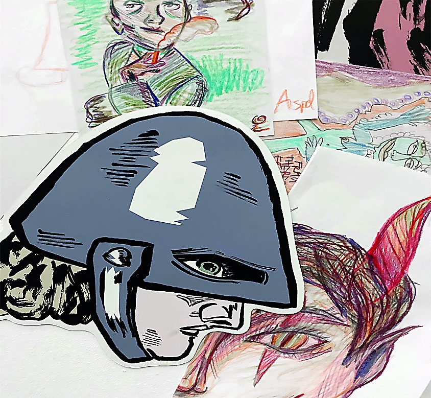
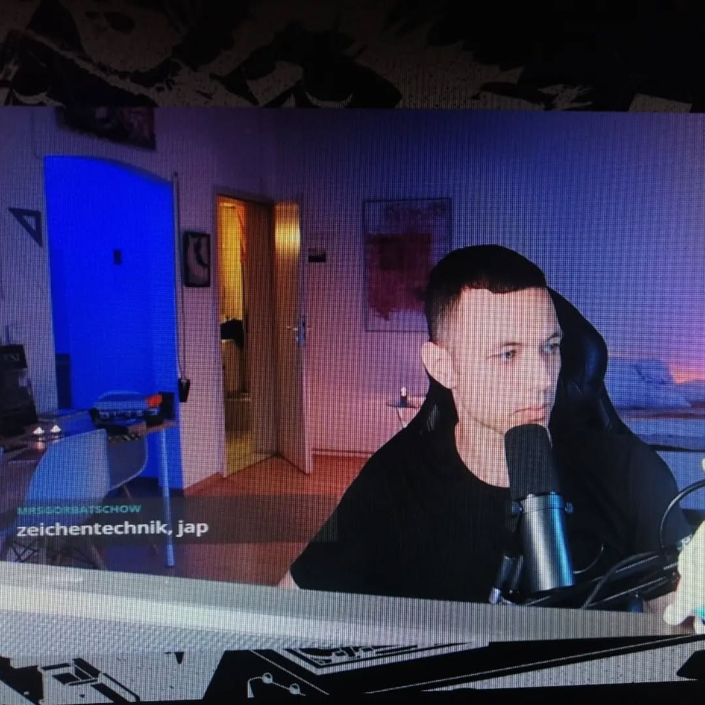
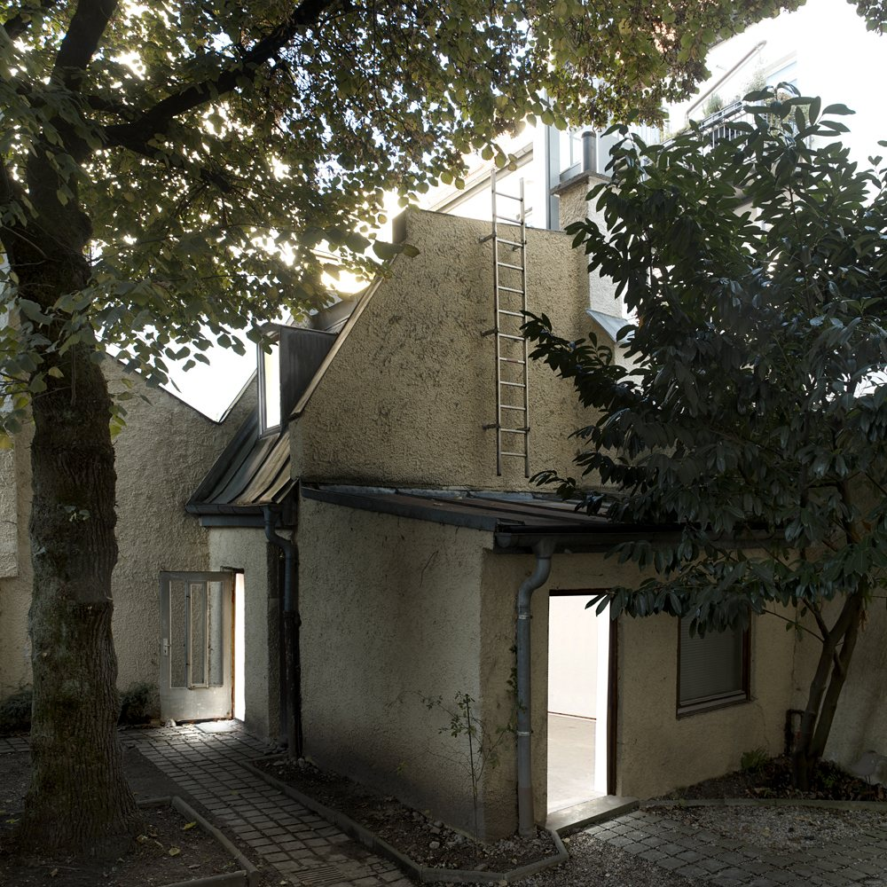

Von Juni 2025 bis zum Ende der Ausstellung im September 2026 leitete Josef Knoll die Comic-Workshops zur Ausstellung "Wie Bilder erzählen. Storytelling von Albrecht Altdorfer bis Peter Paul Rubens" in der Alten Pinakothek.1 Vor den Originalen wurde gezeichnet: Wie baut Altdorfer eine Erzählung in ein Bild, wie Rubens und wie macht man daraus Panels, Sequenzen, Seiten? Die Werkzeuge kommen aus dem Comic (Einstellungsgrößen, Rhythmus, Sprechblasen), die Beispiele aus der Sammlung.
Felix Pfahl
Ein herzlicher Dank geht an Johanna Pawis von Bildung und Vermittlung der Alten Pinakothek, Kunsthistorikerin mit Schwerpunkt venezianische Malerei. Sie hat die Workshops eingeladen, sie ins Programm der Ausstellung eingebettet und fünfzehn Monate lang begleitet, mit offener Tür vor den Originalen und mit Geduld für jede neue Idee von Termin zu Termin. Es war ein schönes Miteinander, auf das ich gern zurückschaue.
Josef Knoll
Anmerkungen
- Wie Bilder erzählen. Storytelling von Albrecht Altdorfer bis Peter Paul Rubens, Alte Pinakothek, München, 2025/26.
Für die Ausstellung "Max Beckmann. Departure" (November 2022 bis März 2023)1 gestaltete Josef Knoll in Zusammenarbeit mit Kurator*innen und Historiker*innen den Vermittlungsraum, den letzten Raum des Rundgangs. Illustrierte Elemente aus den gezeigten Werken waren als große Magnete frei an der Wand arrangierbar, ein kleiner Zeichenschrank lud dazu ein, dem Magnetspiel eigene Zeichnungen hinzuzufügen. Die Anordnung wechselte mit jedem Besuch.
Für die Illustrationen der Magnete wählte er bewusst eine einfache Comicästhetik, um Kindern und Jugendlichen den Zugang zu erleichtern und die Hemmschwelle für eigene Zeichnungen so gering wie möglich zu halten. Die Magnete zeigen Figuren, Tiere und Gegenstände aus Beckmanns Bildern.
Felix Pfahl
Ein herzlicher Dank geht an alle, die diesen Raum mit mir gebaut haben. An Uli Ball, Co-Leiter von Bildung und Vermittlung der Pinakothek der Moderne, Künstler und Kunstpädagoge, mit dem das Konzept vom Magnetspiel bis zum Zeichenschrank entstanden ist. An Dr. Christiane Zeiller, Kuratorin der Ausstellung und wissenschaftliche Mitarbeiterin des Max Beckmann Archivs, die die Motive der Magnete mit ihrem Wissen um die Werke begleitet hat. An Sarah Louisa Henn, Kuratorin der Ausstellung und Mitherausgeberin des Katalogs, heute Sammlungsleiterin am Max Ernst Museum Brühl, die den Kontakt hergestellt und das Projekt angestoßen hat. Diese Monate waren von Vertrauen und Freude an der gemeinsamen Sache getragen, vom ersten Entwurf bis zur letzten Magnetwand.
Josef Knoll
Anmerkungen
- Max Beckmann. Departure, Pinakothek der Moderne, München, 25. November 2022 bis 12. März 2023.
Magnete

Illustration

Illustration

Illustration

Illustration

Illustration

Illustration

Illustration

Illustration

Illustration
Vermittlungsraum

Besucherinnen und Besucher am Magnetspiel

Ausstellungsansicht

Ausstellungsansicht

Ausstellungsansicht

Ausstellungsansicht

Pinakothek der Moderne, München. Foto: Haydar Koyupinar, Bayerische Staatsgemäldesammlungen

Ausstellungsansicht
Zusammen mit der Lyrikerin Lina Atfah leitete Josef Knoll vom 17. bis 21. Oktober 2022 eine Projektwoche des Kunst-Musik-Kurses (9. Klasse) des Annette-von-Droste-Hülshoff-Gymnasiums Münster, veranstaltet vom Center for Literature auf Burg Hülshoff und im Haus Rüschhaus. Zwischen Bild und Wort näherten sich die Jugendlichen dem Werk der Dichterin schreibend und zeichnend.
Den Ausgangspunkt bildete ein Schiller-Zitat, das die junge Annette 1829 leicht abgeändert in ein Fenster der Burg ritzte und das erst im letzten Jahrzehnt wiederentdeckt wurde: "In des Herzens heilig stille Räume / Mußt du fliehen aus des Lebens Drang, / Freiheit wohnet nur im Reich der Träume, / und das Schöne blüht nur im Gesang."1 Schiller zu lesen war ihr von den Eltern untersagt. Das Zitat war der Ausgangspunkt: Unter Atfahs Anleitung entstanden Kurzgeschichten, in den Zeichenübungen mit Knoll wurden sie zu Comics und gemeinsam wurde ausgearbeitet, wie Text und Comic zu einer Graphic Novel zusammenfinden. Die Ergebnisse wurden digital aufbereitet und sind in der "Jungen Digitalen Burg" zu sehen. Der WDR berichtete2 ("Schüler auf Annette von Droste-Hülshoffs Spuren", WDR 3 Kultur am Mittag, 19. Oktober 2022).
Felix Pfahl
Ein herzlicher Dank geht an Lina Atfah, die als Lyrikerin die Schreibseite der Woche getragen hat; das Hin und Her zwischen ihrem Text und meiner Zeichnung war das Schönste an diesen fünf Tagen. An Jenny Bohn, Leiterin der Dramaturgie am Center for Literature, die das Projekt erdacht und uns beide zusammengebracht hat. An Dominik Renneke, Dramaturg und Kurator für partizipative Formate am Center for Literature, der die Woche auf Burg Hülshoff und im Rüschhaus begleitet und die Ergebnisse in die Junge Digitale Burg gebracht hat. Und an die Schülerinnen und Schüler, aus deren Fensterkritzel in fünf Tagen eine Graphic Novel wurde.
Josef Knoll
Anmerkungen
- Friedrich Schiller, Der Antritt des neuen Jahrhunderts, 1801, letzte Strophe; Fensterritzung Annette von Droste-Hülshoffs, Burg Hülshoff, 1829.
- WDR 3 Kultur am Mittag, "Schüler auf Annette von Droste-Hülshoffs Spuren", Radiobeitrag, 19. Oktober 2022 (nicht mehr online).

Schülerarbeit

Schülerarbeit

Schülerarbeit

Schülerarbeit

Schülerarbeit

Schülerarbeit

Schülerarbeit

Schülerarbeit

Schülerarbeit

Schülerarbeit
Links

Im Mai 2022 begann Josef Knoll, regelmäßig auf Twitch zu streamen, zeitweise täglich: montags bis samstags von 15 bis 19 und 20 bis 24 Uhr. Das Programm: an der Graphic Novel THE IDEAL CITY arbeiten (Finding Sigma), Devlogs, Zeichnen auf Zuruf des Chats, Vorlesestreams (Eva Illouz, Was ist sexuelles Kapital?), Schreibstreams, Let's Plays (Death Stranding), ein spontaner Podcast mit Gästen (Till Severin vom Verlagshaus Berlin, Juno Meinecke, Svenja Reiner) und Art Class: Zeichenunterricht via Twitch, als YouTube-Videos geschnitten. Art Class #1: Würfeln, perspektivisches Zeichnen in drei Schritten (Geste, Würfeln, Komposition). Art Class #2: Grundlagen. Artistic Anatomy of the Good Old Back. Dynamic figure drawing nach Luca Cambiaso und George B. Bridgman.1
Dazu der Discord-Server The Ideal City, gedacht als Off-Space ohne physischen Ort: "ein dezentraler Basketballplatz, den man nach der Schule besucht, um zu sehen, wer da ist und was alle so machen". Veranstaltungen wie eine Führung durch die SCP Foundation mit Kn/Julian, Watch Parties, Lesenächte, ein Zeichenclub auf einer gemeinsamen Leinwand (aggie.io) alle zwei Wochen. Im Mai 2022 wurde der Kanal Twitch-Affiliate. 2023 lief das Format als Community Thursday weiter. Auf YouTube: die Portfolio-Tour "A guided tour through my artistic practice", "Why is fine art this expensive?" und eine Review zu Nick Drnasos Sabrina.
Felix Pfahl
Ein herzlicher Dank geht an alle, die The Ideal City mitgebaut und belebt haben. Vor allem an Kn/Julian, der den ganzen Discord-Server eingerichtet und betreut hat und uns als Fremdenführer durch die SCP Foundation geleitet hat. An Jay, die immer mitgezeichnet hat und mit ihrer tollen Art den Discord-Server erst zum Leben erweckt hat. An Jumenov, der die Sakuga-Sparte geleitet und an Animationen für DRAUGR gearbeitet hat. An die Gäste und Gästinnen des spontanen Podcasts: Till Severin vom Verlagshaus Berlin, der im Mai 2022 als Überraschungsbesuch vor der Kamera saß, Juno Meinecke und Svenja Reiner, Kulturwissenschaftlerin und Literaturvermittlerin in Köln, Mitgründerin von INSERT FEMALE ARTIST; das Gespräch mit ihr gehört zu den schönsten Stunden dieser Zeit. An Sabrina, jullsusus und waxton.comix vom Zeichenclub auf der gemeinsamen Leinwand und an alle, die abends vorbeikamen, mitzeichneten und mitredeten; ohne sie wäre der Basketballplatz leer geblieben.
Josef Knoll
Anmerkungen
- George B. Bridgman, Constructive Anatomy, New York 1920; Eva Illouz, Warum Liebe endet, Berlin 2018; Eva Illouz und Dana Kaplan, Was ist sexuelles Kapital?, Berlin 2021.
Josef Knoll unterrichtet seit 2025 Kunst an einem Gymnasium in München. Von 2018 bis 2022 war er Fachlehrer für Kunst in der Sekundarstufe I einer Münchner Realschule (Innovative Schulen München), mit Klassenleitung, Comic- und Graffiti-Workshops, Schülerzeitung und Nachmittagsangeboten.
Der Unterricht folgt derselben Idee wie die Vermittlungsprojekte: Zeichnen als Denken, Popkultur als Einstieg, Kunstgeschichte als Fundus. Comic, Manga und Videospiele öffnen dabei die Tür zur Kunstgeschichte.
Felix Pfahl

Bayerischer Kunstförderpreis 2018, Spezialpreis Künstler als Kuratoren


Kurz nach Click Click Boom trat Josef Knoll ins Team ein. Von 2013 bis zum Ende 2017 betrieb er den Prince of Wales gemeinsam mit Leo Lencsés, Johannes Tassilo Walter und Jonas von Ostrowski: Programm, Aufbau, Flyer, Abende, Editionen, Transporte, Reden.
PRINCE OF WALES. Ein kleines Haus im Hof.
Im Frühjahr 2011 gründeten vier Studierende der Akademie der Bildenden Künste München in einem freistehenden kleinen Haus im Hinterhof der Ohlmüllerstraße 17 ein "Waschhaus für Kunst, Ästhetik und Poesie".1 Zwei Räume, eine steile Treppe, Donnerstag bis Samstag von 16 bis 19 Uhr geöffnet. Bis zum Sommer 2017 fanden hier über vierzig Ausstellungen statt, dazu zwei große Editionsschauen, Performances, Lesungen, Konzerte, Reden und Seminare, Publikationen und Kooperationen mit Kurator*innen, Verlagen, anderen Ausstellungsräumen und Galerien.2 Der Prince of Wales verstand sich als unabhängiger Raum der Kunstproduktion: Das Programm legte das Team fest, die Ausstellungen entstanden in enger Zusammenarbeit mit den Künstler*innen und meist direkt vor Ort.
Zu den Gründungsmitgliedern gehörten Nigin Beck und Andreas Chwatal. Josef Knoll zeigte im März 2013 seine erste Einzelausstellung in der Ohlmüllerstraße und trat danach ins Team ein; mit Leo Lencsés, Johannes Tassilo Walter und Jonas von Ostrowski führte er den Raum bis zum Schluss.3
Das Haus im Hof lag zwischen Akademie, Kunstverein und Galerien; es war ein Ort, an dem Studierende, Absolvent*innen und etablierte Künstler*innen unter denselben Bedingungen ausstellten, fast immer mit neuen, für die beiden Räume gemachten Arbeiten. Die Beteiligten kamen aus München und von weiter her. Zu Gast waren unter anderen Flaka Haliti (Pristina und München, im selben Jahr Kosovo-Pavillon der Biennale Venedig), Egill Sæbjörnsson (Reykjavík und Berlin, 2017 isländischer Pavillon in Venedig), Thea Djordjadze (Tbilisi und Berlin, documenta 13), Kerstin Brätsch (New York), Anna-Sophie Berger (Wien und New York), Yorgos Sapountzis (Athen und Berlin), Claus Hugo Nielsen und Emil Westman Hertz (Kopenhagen), Magdalena Kita (Köln) und Paul Czerlitzki (Düsseldorf). In den Editionen standen Günther Förg, Olaf Metzel, Peter Kogler, Andreas Schulze, Markus Oehlen und Blinky Palermo neben den Jüngsten.4 Im Februar 2016 reiste der Prince of Wales mit Sarah Lehnerers Scale, Scope, Paradise auf die Messe artgenève nach Genf.
2018 zeichnete der Freistaat Bayern den Prince of Wales mit dem Spezialpreis "Künstler als Kuratoren" des Bayerischen Kunstförderpreises aus, verliehen am 6. November 2018 in der Hochschule für Fernsehen und Film München. Die Jury hob "insbesondere den hohen ästhetischen Anspruch des stringenten kuratorischen Programms hervor".5 Da war das Haus schon ein Jahr geschlossen.
Felix Pfahl
Anmerkungen
- Prince of Wales, Selbstbeschreibung im Archiv-Feed (Instagram, princeofwalesmuenchen), 2024; ebenso Bayerisches Staatsministerium für Wissenschaft und Kunst, Pressemitteilung Nr. 094 vom 1. August 2018.
- Programmliste 2011 bis 2017 nach dem Archiv-Feed und der Facebook-Seite Prince of Wales (41 Veranstaltungen, dazu artgenève 2016).
- Josef Knoll, Instagram the.ideal.city, 12. und 21. Juni 2022; Portfolio 2015.
- Attraktiv. Editionen, 15. bis 23. Dezember 2011; Editionen, 13. bis 20. Dezember 2012 (Archiv-Feed).
- Bayerisches Staatsministerium für Wissenschaft und Kunst, Pressemitteilung Nr. 094 vom 1. August 2018, stmwk.bayern.de; Bayerische Staatskanzlei, Pressemitteilung zur Verleihung vom 6. November 2018, bayern.de. Preisträger: Leo Lencsés und Jonas von Ostrowski für Prince of Wales, geteilt mit easy!upstream (München) und Edel Extra (Nürnberg).
Ausstellungen, eine Auswahl

park
5. bis 9. Mai 2012, Eröffnung 5. Mai, 18 bis 22 Uhr

The 11 und 12
7. bis 15. Juni 2012

Skulpturengarten
21. bis 29. September 2012

Raben und Raketen
12. bis 20. April 2013, Eröffnung 12. April, 18 Uhr

Pfandflaschen are a pleasure to me / They pay my breakfast, lunch and tea
11. bis 19. Oktober 2013

Enthüllung der geheimen Schönheit und ihrer Zeitschrift / Aber wir wollten doch schön sein
16. November 2013, 18 bis 22 Uhr

Exclusively für Alle
7. bis 15. Dezember 2013

Doppelzimmer
25. April bis 16. Mai 2014

Replay
19. September bis 19. Oktober 2014

I was like you before I got stoned by the fresh air
11. September bis 10. Oktober 2015

Stars and Stripes
23. Oktober bis 14. November 2015

Fucking on Business
27. Februar bis 19. März 2016